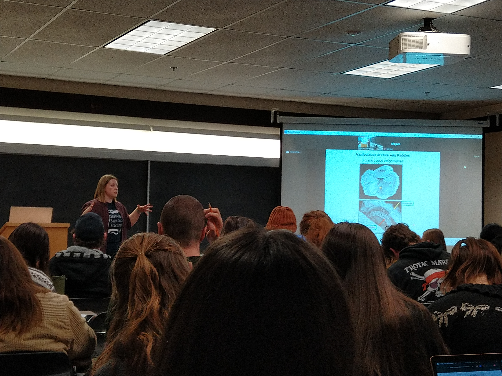
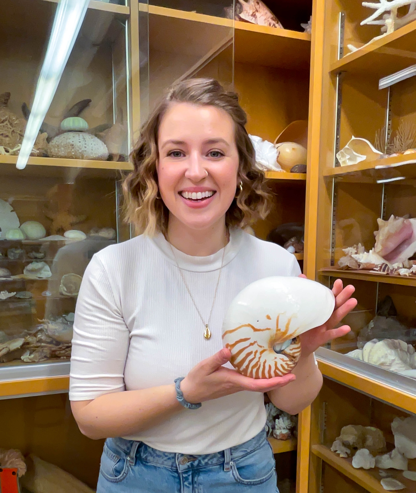
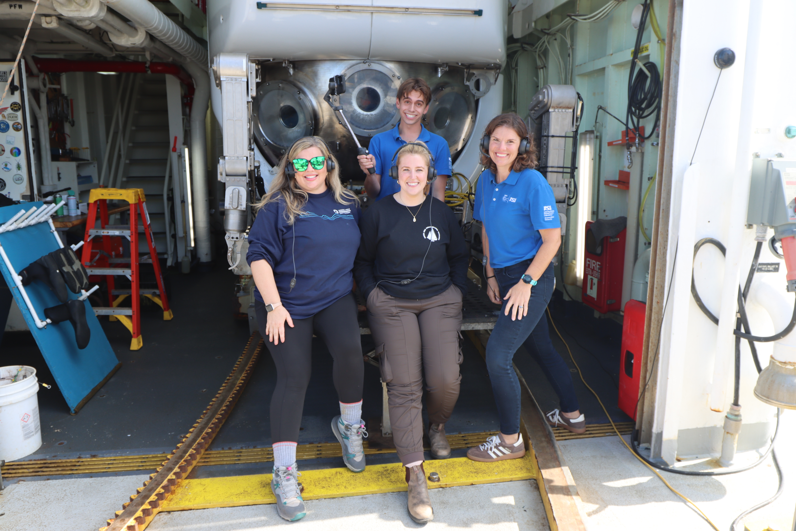
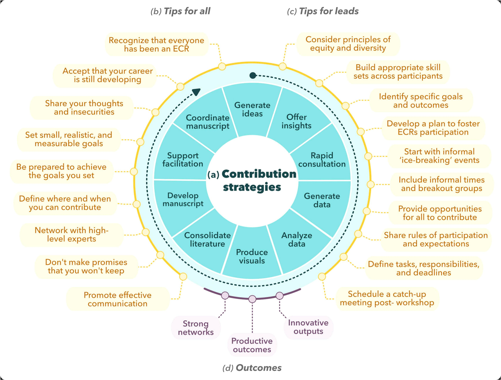

Good science doesn't stop at the lab door. I teach marine invertebrate biology at UVic, connect with classrooms from the deck of a research ship, and find every opportunity I can to share what's down there with people who've never seen it.

I have lectured BIOL322 twice, most recently in 2026. The course covers the biology, ecology, and evolutionary adaptations of marine invertebrates — from cnidarians and echinoderms to molluscs and arthropods. I develop lecture content from primary literature and bring in my own deep-sea research wherever I can. My favourite part of teaching is taking a genuinely hard concept and finding the angle that makes it click — and then watching a student have that lightbulb moment of understanding.
In 2024, I also served as Senior Laboratory Instructor, designing and delivering the lab curriculum alongside my teaching — including coordinating live animal acquisition, permitting, and dissection logistics, and organising guest lectures from the Royal BC Museum and Ocean Networks Canada.
Selected from UVic Course Experience Survey — BIOL 322, Marine Invertebrates
"Megan Davies quickly became one of my favourite profs I have had during my degree. She has such a thorough understanding of the material, it was impressive watching her quick responses to questions in class. She spoke clearly and had a knack of simplifying complex topics to make them much easier to understand."
"Megan is one of the best lecturers I have ever had. She was really passionate about the material and did a fantastic job of providing clear and concise information. She presents material in an engaging way and throughout the course demonstrated that she is incredibly perceptive to student feedback — I had the sense she really cares about students learning."
"Megan is one of the best lecturers I've had in my 5 years of undergrad at UVic. Her explanations were clearly defined, well thought out, and it was clear she was approaching topics from a student lens — when explaining complex concepts, she seemed to anticipate potential confusion and explain them effectively. I cannot express deeply enough that Megan should continue to be an instructor of this course. UVic is lucky to have her represent the biology department."
Before moving into a lecturing role, I TAd across three different UVic courses — all marine or invertebrate-focused. As a TA I led lab sections, supported students through data analysis, marked assignments, and helped coordinate course logistics.
Working closely with students at that level — early in their biology degrees, first encountering marine science properly — is what convinced me I wanted to teach. There's something particular about the moment a student sees a live chiton or gets their hands into a sea urchin dissection for the first time.
5 terms total across all courses · University of Victoria

UVic marine invertebrate specimen collection

While at sea on research expeditions, I've connected directly with school groups through ship-to-shore programs — live broadcasts from the vessel where students can ask questions in real time and see what deep-sea research actually looks like in the field.
It's one of my favourite things to do. There's something special about talking to a classroom of twelve-year-olds while you're literally in the middle of the ocean, surrounded by equipment that's been to the seafloor and back. You can see the moment it lands for them.
Science communication is part of the job. Here's where I do it outside of the classroom.
Available for classroom visits via the Skype a Scientist program. I talk marine biology, deep-sea ecology, and the realities of a career in ocean science — to any age group, any level of prior knowledge.
Mentor through the University of Victoria's peer mentoring program, supporting undergraduate students navigating their degree, academic challenges, and paths into science careers.
Science outreach work with the World Fisheries Trust, contributing to public engagement with fisheries science, ocean conservation, and sustainable marine resource management.
Member of the DOOS Early-Career Researchers program (2021–2024), a global deep-sea mentoring initiative connecting early-career researchers across the international deep-ocean science community. See the DOERs Story Map →
I facilitated UVic Ecostats, a graduate student-run group making ecological statistics accessible to students who find quantitative methods daunting. Come learn alongside people who also find it hard.
Participated in Canadian Science Advisory Secretariat (CSAS) peer review processes (2023), contributing to the translation of scientific research into fisheries and ocean management advice for the federal government.
Hosted by Madison Bolt — my labmate Valesca de Groot and I talk marine stories and the realities of graduate school in ocean science. A candid, honest look at life in academia. Website → · Listen on Spotify →
An interview centred on imposter syndrome and what it means to be a scientist — the argument that you don't have to be a statistical expert to succeed in science, that the artist, the storyteller, the communicator all have a place. OceanBites makes cutting-edge ocean science accessible to everyone. Listen to the episode →
Scientific working groups bring together experts to tackle complex conservation problems — but feelings of inadequacy can block the very innovation that diverse perspectives are meant to generate. Drawing on personal experience and the literature, we identify ten contribution strategies and advocate for inclusive approaches that respect the full diversity of personality types and perspectives. Bates, A.E., M.A. Davies et al. Biological Conservation, 2024 →

Figure from Bates, A.E., M.A. Davies et al. Biological Conservation, 2024